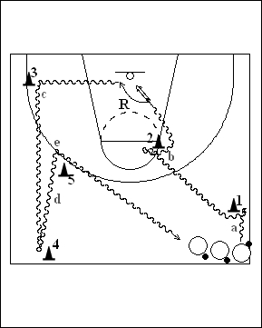

Catégorie : DRIBBLE (Dr-003)
Déroulement
- Tous les joueurs possèdent un ballon à une extrémité de la ligne médiane.
- Ils dribblent en effectuant successivement :
a) Changement de direction vers l’avant au cône 1.
b) Changement de direction entre les jambes au cône 2, suivi d’un lay-up, du rebond et du nouveau départ en dribble vers le cône 3.
c) Changement de direction en reverse et dribble jusqu’au cône 4.
d) Back dribble (dribble arrière) du cône 4 au cône 5.
e) Changement de direction derrière le dos et retour en dribble derrière la file de départ.
Chaque joueur part en dribble lorsque le précédent a réalisé son lay-up.
Coaching points
- Insister sur le changement de rythme qui doit accompagner chaque changement de direction.
- Demander le départ en dribble de la main droite pour se retrouver de nouveau en dribble main droite pour la réalisation du lay-up.